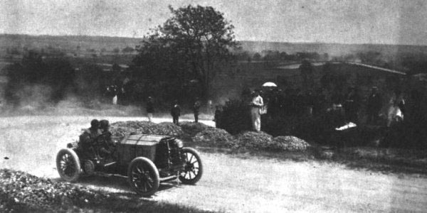

Истоки
Автомобильные гонки начались почти сразу после создания автомобилей, оснащенных бензиновыми двигателями внутреннего сгорания. Первые организованные соревнования прошли 28 апреля 1887 года во Франции по маршруту Neuilly Bridge - Bois de Boulogne.

Фотография первого заезда
Спустя 8 лет были усовершенствованы правила автогонок, в частности, участники должны были стартовать одновременно. Маршрут был значительно удлинен, автомобили должны были преодолеть расстояние в 1178 км Париж-Бордо-Париж.
В 1897 году в Ницце состоялась серия соревнований «Неделя скорости». Конкурсанты участвовали в ряде разных дисциплин, в которые входили как кольцевые гонки, так и спринты, подъемы на холм.
XX век
В начале XX века появляются первые стационарные автодромы. Они обеспечивали больше комфорта и были более безопасными для зрителей по сравнению с гонками по дорогам общего пользования. Старейшим автодромом в мире считается Milwaukee Mie (США, штат Висконсин), открытый в 1903 году.
В конце 1940-х организационно оформляются кольцевые гоночные серии, которые сегодня входят в число самых коммерчески успешных спортивных предприятий мира: NASCAR в США и «Формула-1» в Европе.
Легендарный автомобиль от Ford — GT-40
Безопасность гонок
История автоспорта изобилует захватывающими спортивными подвигами, многозначительными техническими достижениями и, в то же время, трагедиями. Во время 24-часовой гонки в Ле-Мане (в 1955 году) Mercedes Пьера Левега вылетел за ограждение, от обломков и вспыхнувшего топлива погибли более 80 зрителей. После этого события немецкий автопроизводитель надолго ушёл из автоспорта. При этом ремни безопасности в Формуле-1 были введены только в шестидесятых годах.
В связи с этой трагедией в Швейцарии были запрещены любые проявления автоспорта. 16 марта 2015 года правительство внесло изменения в запрет, и разрешило проведение в стране гонок Формулы Е
Ролик про данное печальное событие